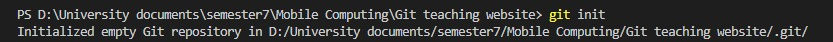
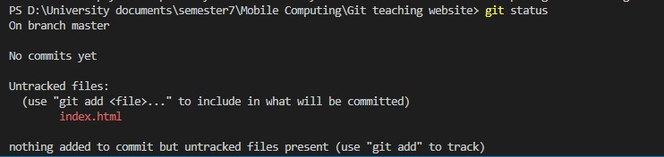
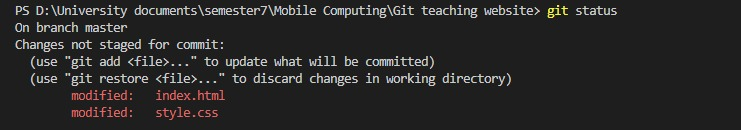
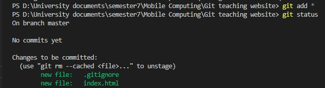
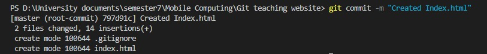
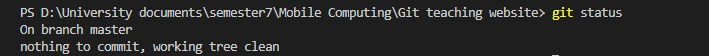
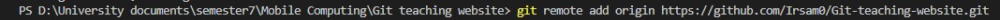
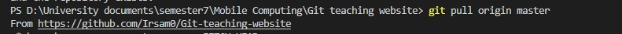

Git Init
The git init command creates a new Git repository. It can be used to convert an existing, unversioned project to a Git repository or initialize a new, empty repository. Most other Git commands are not available outside of an initialized repository, so this is usually the first command you'll run in a new project.
Git Status
The git status command displays the state of the working directory and the staging area. It lets you see which changes have been staged, which haven’t, and which files aren’t being tracked by Git. Status output does not show you any information regarding the committed project history. For this, you need to use git log.
-
Untracked Files
Untracked files are the ones still not versioned—”tracked”—by Git. This is the state of new files you add to your repository. That basically means Git is aware the file exists, but still hasn't saved it in its internal database.
 -
Modified Files
As you edit files, Git sees them as modified, because you've changed them since your last commit. As you work, you selectively stage these modified files and then commit all those staged changes, and the cycle repeats.

Git Add
The git add command adds a change in the working directory to the staging area. It tells Git that you want to include updates to a particular file in the next commit. However, git add doesn't really affect the repository in any significant way—changes are not actually recorded until you run git commit .
Git Commit
The git commit command captures a snapshot of the project's currently staged changes. Committed snapshots can be thought of as “safe” versions of a project—Git will never change them unless you explicitly ask it to.
After commiting git status will look like this.
Git Push
To push all your files and changes to remote github repository you need following 2 commands.
-
Git Remote Add
To add a new remote, use the git remote add command on the terminal, in the directory your repository is stored at. The git remote add command takes two arguments: A remote name, for example, origin A remote URL, for example, https://github.com/user/repo.git For example:
 -
Git Push Origin
Git Push Origin Master pushes your master branch to the origin. Behavior could be changed via git config. Behaviour is by default.

Git Pull
The git pull command is used to fetch and download content from a remote repository and immediately update the local repository to match that content. Merging remote upstream changes into your local repository is a common task in Git-based collaboration work flows.
